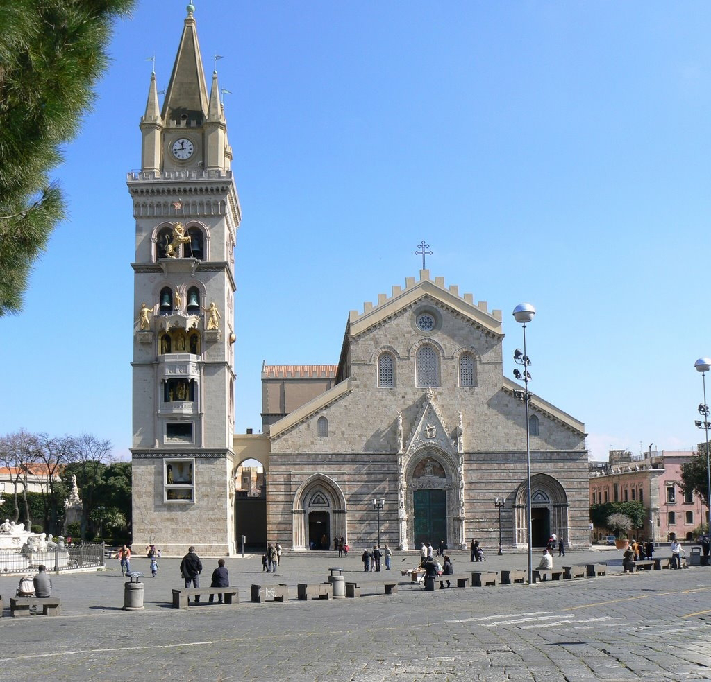

Messina — Arte astronomica e rinascite sullo Stretto.
Ampia e ariosa, la piazza è il baricentro storico e spirituale della città di Messina, testimone ravvicinata di profonde ricostruzioni storiche.

Costruito dai fratelli Ungerer nel 1933, racchiude l'orologio astronomico e meccanico più grande al mondo. Ogni giorno a mezzogiorno le statue si muovono al suono dell'Ave Maria.
Fondata in epoca normanna e consacrata nel 1197, la basilica è stata fedelmente ricostruita dopo i terremoti e i bombardamenti, preservando i bellissimi portali gotici originari sulla facciata.
Capolavoro rinascimentale di Giovanni Angelo Montorsoli (allievo di Michelangelo), fu definita dallo storico d'arte Berenson come "la più bella fontana del Cinquecento europeo".
Il basamento della Fontana di Orione celebra la fondazione mitologica della città attraverso le personificazioni fluviali del Tevere, del Nilo, dell'Ebro e del fiume locale Camaro.